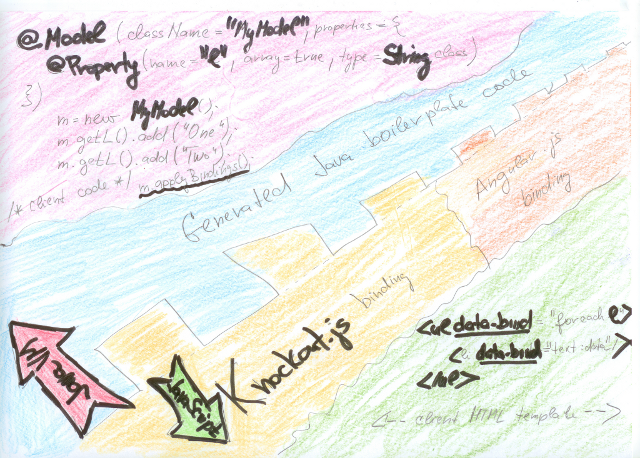

This API allows you to write your application logic in Java and present it using modern HTML rendering technologies like Knockout .
Use @Model annotation to define one or more model classes with properties. Don't waste time writing setters or getters - they will be generated for you. Just instantiate your classes and use them!
The class generator does not stop with getters and setters -- internally
it generates bindings for various HTML technologies. Just include appropriate
technology implementation on classpath of your application and your model
class(es) will automatically be bound to your HTML elements (after calling
applyBindings() on your model).
You don't have bother with JavaScript. All your application logic is in
Java. The necessary JavaScript needed for the HTML bindings remains hidden
as an implementation detail of communication between the generated model
class(es) and appropriate technology bridge (like artifact with id ko-fx
and group id org.apidesign.html).
The model classes can be used for JSON based server communication. Just use @OnReceive annotation to define a communication point in the model class. Please note, that the model classes can easily be used on server as well - the same code can run in your browser as well as on your server. Just add following to your pom.xml to use your classes generated by @Model annotation as Jersey entities:
<dependency>
<groupId>org.glassfish.jersey.media</groupId>
<artifactId>html-json</artifactId>
<version>2.1</version>
<scope>runtime</scope>
</dependency>
Behavior of model classes can be enriched by using @ComputedProperty annotation (to define derived properties) and by @Function annotation to define handlers to be invoked from the HTML elements.